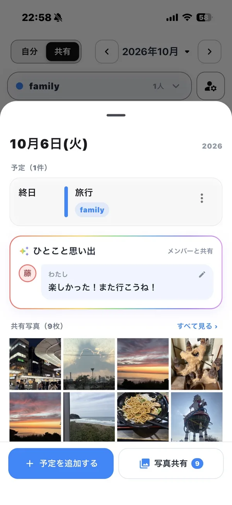
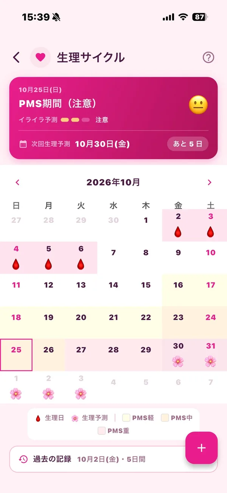
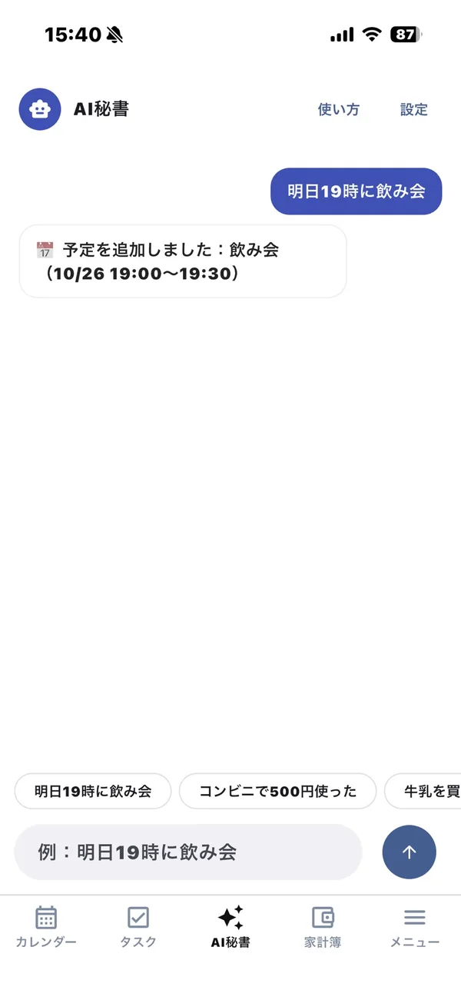

無料カレンダーアプリ「フルカレ」
予定入力、
めんどくさい？
「明日15時から歯医者」と話すだけで、カレンダーに予定が入ります。家族との共有カレンダー、家計簿、生理日の予測、育児記録まで、毎日の記録がこれ一つにまとまります。
基本無料（広告あり）／ 広告なしのProは月額300円


カレンダーアプリ、
こんな悩みありませんか？
予定を入れるのが面倒で、つい後回し
→ 話すだけで登録。日付や時間を選ぶ操作がいりません。
家族の予定をLINEで聞き直している
→ 共有カレンダーで、追加されたら通知でわかります。
家計簿アプリが3日坊主で続かない
→ いつも開くカレンダーに家計簿が付いているから続きます。
次の生理がいつ来るか、毎回数えている
→ 記録するだけで次回の予定日をカレンダーに表示。
子どもの写真がトークに流れて見つからない
→ 日付ごとに写真・日記・成長記録が残ります。
予定・家計簿・生理…アプリが多すぎる
→ フルカレ一つにまとめられます。
悩みごとに、ぜんぶ解決。
フルカレは「予定入力の手間」を減らすところから始まったカレンダーアプリです。毎日の記録を1か所にまとめるための機能がそろっています。
話すだけで、予定が入る。
マイクを押して「明日15時から歯医者」と話すだけ。日付・時間・タイトルを聞き取って、カレンダーに登録します。日付を選んで、時間を選んで、文字を打って……という手間がなくなります。
家族・夫婦の予定が、ひと目でわかる。
共有カレンダーを作って招待コードを送るだけ。家族やパートナー、友達と予定を共有できます。誰かが予定を追加すると、メンバーにプッシュ通知でお知らせします。
- 日付ごとに写真を共有。トークに埋もれる思い出が1か所に残る
- 「ひとこと思い出」で、その日の感想をメンバー全員分並べて残せる
- 自分のカレンダーと共有カレンダーは、左上のボタンで切り替え
- iPhoneとAndroidの間でも共有できる

家計簿も、楽々登録。
家計簿アプリが続かない一番の理由は「開かなくなること」。フルカレは毎日開くカレンダーの中に家計簿があるので、予定を見るついでに記録できます。「外食 800円 ランチ」と話すだけでも登録できます。
- 今月の収支、前月比、カテゴリ別ランキング、日別・月別の推移
- サブスクなどの定期支払いは、支払日に自動で家計簿へ
- 家計簿は自分専用。共有カレンダーのメンバーには見えません
※画面はイメージです
生理の記録と予測も、カレンダーで。
生理日を記録するだけで、次回の予定日を予測してカレンダーに表示します。PMS期間の目安もわかるので、予定を立てるときに体調の見通しが立てやすくなります。予定と同じ画面で見られるのがポイントです。
※予測はあくまで目安です。医療上の判断には使わないでください。
生理予測カレンダーについて詳しく
子どもの大切な思い出も記録。
ミルク・おむつ・睡眠・体重・体温を記録し、次のミルクの時間を通知でお知らせします。「成長日記」では、できるようになったことを写真と一緒に残せて、生後○か月・○日も自動で表示されます。
育児記録・成長日記について詳しく
AI秘書に、まかせる。
チャットで頼むだけで、予定・タスク・家計簿の追加・変更・削除をAIが代わりにやります。どの予定かを探して開いて直す、という操作がいりません。
※当てはまるものが複数あるときは一覧から選べます。削除の前には必ず確認が入ります。AI秘書は予定・タスク・家計簿の操作専用です。

毎日の記録が、これ一つ。
予定はこのアプリ、家計簿はあのアプリ、生理はまた別のアプリ……。フルカレなら、ぜんぶカレンダーの上にまとまります。
タスク・メモ
やることリストと、ちょっとしたメモ。音声でも追加できます。
日記
カレンダーの日付に、そのまま日記と写真を残せます。記録した日は虹色のマスに。
ウィジェット
今日・明日の予定や月カレンダーを、ホーム画面で確認。iPhoneはロック画面にも。
繰り返し・通知
毎週・毎月の予定や、予定前の通知に対応。祝日も表示します。
スタンプ・色分け
予定にスタンプや色を付けて、ひと目でわかるカレンダーに。
ダイエット
体重・BMIを記録して、月別のグラフで推移を確認。
着せ替え
テーマ色を選んで、自分好みの見た目に。
日本語・英語
英語表示にも対応。英語の音声入力もできます。
基本無料で、ずっと使える。
主な機能は無料プランですべて使えます。
無料プラン
- 音声入力・共有カレンダー・家計簿・生理予測・育児記録・日記・ウィジェット
- 共有カレンダー10個まで
- 写真は1日10枚（動画視聴で20枚）
- AI秘書は20回までお試し
- 広告あり
Pro
- 広告なし（カレンダーが広くなる）
- 音声入力をAIで解析して精度アップ
- AI秘書が使い放題
- 写真1日100枚・共有カレンダー20個
- 日記のテキスト無制限
Proは自動更新のサブスクリプションです。解約はストアのアカウント設定からいつでもできます。価格は日本のストアでの税込価格です。
目的別に、くわしく見る
よくある質問
フルカレは無料で使えますか？
はい。音声入力、共有カレンダー、家計簿、生理の記録と予測、育児記録、日記、ウィジェットなど主な機能は無料で使えます（広告あり）。月額300円のProにすると広告が消え、AI秘書が使い放題になります。
音声入力ではどんな言い方ができますか？
「明日15時から歯医者」「来週月曜 会議」「10月10日から12日 旅行」など、ふだんの言い方で話せます。時間を言わなければ終日の予定になります。「〜をタスクに追加」「〜をメモして」と言えば、タスクやメモとして登録されます。1回の発話で登録されるのは、予定・タスク・メモのどれか1つです。
家族や夫婦でカレンダーを共有できますか？
できます。共有カレンダーを作って招待コードを送るだけで、家族やパートナーと予定を共有できます。予定が追加されるとメンバーに通知が届き、日付ごとに写真も共有できます。
家計簿は家族に見られますか？
見られません。家計簿は自分専用で、共有カレンダーのメンバーには表示されません。
生理日の予測は正確ですか？
記録した生理日から次回の予定日とPMS期間の目安を表示します。あくまで目安なので、医療上の判断には使わないでください。
iPhoneとAndroidのどちらでも使えますか？
どちらにも対応しています。共有カレンダーはiPhoneとAndroidの間でも使えます。